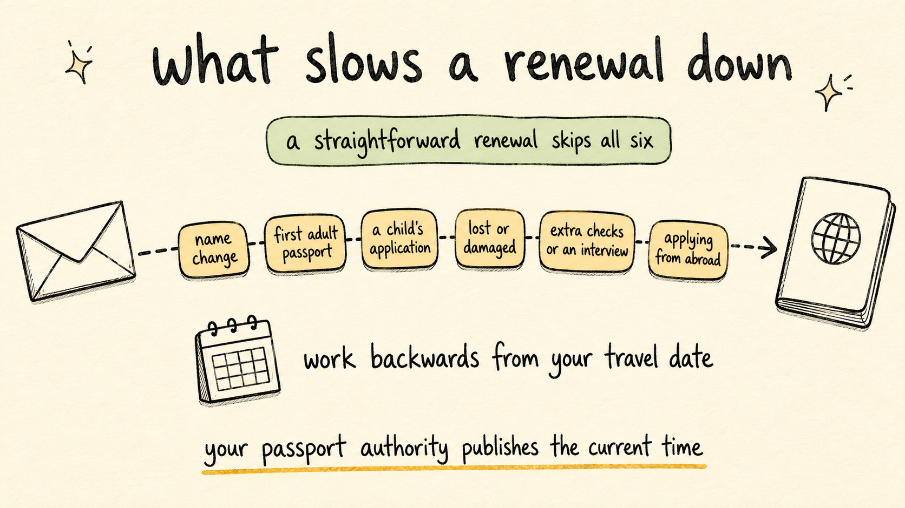

How Long Does Passport Renewal Take? (US, UK, Australia, Canada)
Travel Document Vault
Key Takeaways
- How long passport renewal takes depends on where you live: Australia advises allowing at least 6 weeks, standard US processing runs 4-6 weeks (expedited 2-3 weeks), and the UK usually takes around 3 weeks.
- Every country has an expedited option - but it costs extra, and "fast" still means days or weeks, not hours.
- Peak travel seasons (Jan–March and June–August) regularly push real-world times well beyond the official estimates.
- The safest rule: start the renewal process the moment your passport drops below 12 months of validity.
- If you've got a trip booked and your passport is about to expire, call your passport authority directly - don't just browse the website.
You've booked flights for a trip five months from now. You pull out everyone's passports to double-check, and there it is: one expires in five months and three weeks. Now you need to know exactly how long passport renewal takes - because the math suddenly matters.
The answer depends on where you live, when you apply, and how much you're willing to pay. This guide walks through the real-world passport processing times for the US, UK, Australia, and Canada in 2026 - plus what to do when your timeline is already tight.
Heads up: Processing times shift constantly. The figures below reflect typical published timelines. Always check your country's official passport authority before applying as times change frequently.

How Long Does Passport Renewal Take in the United States?
The current processing times from the US State Department are as follows. Verify these before applying, as times shift regularly:
| Service Type | Processing Time | Additional Fee |
|---|---|---|
| Routine | 4–6 weeks | None |
| Expedited | 2–3 weeks | $60 additional |
| Urgent (in-person agency appointment) | Days to 1 week | $60 additional + appointment required |
Urgent agency appointments are available if you have documented travel within 14 calendar days, or need a foreign visa within 28 days. For genuine life-or-death emergencies, same-day appointments exist. Book at travel.state.gov and bring proof of travel - they won't see you without it.
The US offers an online renewal program for eligible adults. To qualify, you must be renewing a US passport book that was issued when you were 16 or older. Check travel.state.gov to see if you're eligible and whether the program is currently accepting applications.
One important caveat: published times are averages, not guarantees. Check travel.state.gov for current times before applying because, during peak demand (January through March and June through August), routine processing regularly stretches well beyond the published estimates. If your trip falls within three months, consider paying the extra $60 for expedited processing - the modest cost is far outweighed by the certainty and scheduling flexibility it provides.
What this means in practice
If you're travelling in July and apply in mid-April (12 weeks out), you're cutting it fine on standard US processing during peak season. Pay the $60 for expedited processing, and you're comfortable - you've bought certainty. Apply in April on standard rates, though, and discover processing is running 8 weeks? You're making frantic calls, negotiating with airlines, hoping for a last-minute emergency slot.
How Long Does Passport Renewal Take in the United Kingdom?
HM Passport Office processes UK renewals. These are the typical timelines:
| Service Type | Processing Time | Notes |
|---|---|---|
| Standard (online) | ~3 weeks | Usually within 3 weeks; longer if more information or an interview is needed - check GOV.UK |
| 1-Week Fast Track | ~1 week | Additional fee; in-person appointment at passport office |
| Online Digital Renewal | Varies | Eligible adults only; typically faster |
| Premium (same-day) | Same day | Limited availability; appointment required at specific offices |
The UK offers a digital renewal service for eligible adults applying from within the UK. If you qualify, you don't need to post your old passport. The application is completed online and is generally faster than the postal route. If you are a UK citizen living abroad (an expat), the digital service is not available to you. You must use the overseas passport service at GOV.UK, which does require posting your current passport to HMPO. Processing times for overseas applications can be longer than the standard 10-week UK estimate. Check GOV.UK for the correct service for your situation, which asks for your location at the start of the application.
That 10-week figure assumes everything goes smoothly. A name change, a first adult passport, or any application requiring extra checks will take longer. Children's passports can't use the digital service at all - they go through the standard process only. Before applying, check GOV.UK for current times relevant to your situation.
How Long Does Passport Renewal Take in Australia?
The Australian Passport Office publishes these timelines for adults applying in-person or via Australia Post:
| Service Type | Processing Time | Notes |
|---|---|---|
| Standard | Allow at least 6 weeks | Apply at Australia Post or a passport office |
| Fast track | Processed within 5 business days | Additional fee |
| Priority | Processed within 2 business days | Additional fee; eligibility conditions apply |
Australia's standard processing times are generally better than the US and UK, but they can still stretch during peak periods. The Australian Passport Office recommends applying at least six weeks before travel if you're going standard - check passports.gov.au for current times.
Child passport applications are a different story. They're more complex and take longer than adult renewals, especially when parental consent requirements are involved.
How Long Does Passport Renewal Take in Canada?
Immigration, Refugees and Citizenship Canada (IRCC) processes passport renewals. These are the current published timelines, though it's worth checking IRCC's official page before you apply:
| Service Type | Processing Time | Notes |
|---|---|---|
| Mail-in (Service Canada) | 20 business days | Plus mailing time each way; recommended for non-urgent renewals |
| In-person (Passport Canada office) | 10 business days | Appointment required at select offices |
| Urgent (travel within 5 business days) | Same day or next day | Proof of travel required; in-person only |
| Express (travel within 45 days) | 2–9 business days | In-person at a passport office |
Canada doesn't offer online passport renewal. Every application either goes in the mail or walks through a Passport Canada office door. That makes the process more logistically demanding - especially if you live somewhere rural and the nearest passport office is hours away. Check IRCC's page for current processing times.
Set a renewal reminder now - Travel Document Vault notifies you 6, 3, and 1 month before your passport expires, so you're always renewing with time to spare. Download on the App Store.
Expedited Passport Renewal Tips: How to Speed Things Up
No matter which country you're renewing through, the same mistakes consistently cause delays. Watch for these common culprits:
- Incorrect or incomplete forms. One missing field sends your application straight back. Read the instructions once, fill the form out, then read them again before you submit.
- Non-compliant photos. Passport photo rules are strict - background colour, head size, expression, no glasses. Rejected photos stop processing cold. Get them done professionally if you're unsure.
- Missing supporting documents. Name changes, first adult applications, and citizenship confirmations all need extra paperwork. Have everything ready before you apply, not after.
- Mailing when you're short on time. Post is unpredictable. If your trip is close, use in-person or expedited routes wherever you can, and do not book travel before the new passport arrives.
Can You Travel While Your Passport Is Being Renewed?
The answer surprises most people. In most countries, you can travel while your renewal is pending - you'll use your old (still-valid) passport along with official documentation from the passport authority confirming your application is in progress.
The rules vary by country:
- United States: You can travel with a valid passport while your renewal application is pending. If you submitted your passport with the renewal application (required in some cases), you cannot travel until you get it back. Ask about the "expedite due to travel" option if you have imminent travel.
- United Kingdom: You can travel using your old passport while a new one is in progress - provided the old one is still valid. Once you've sent it in to HMPO, you cannot use it. Don't submit your passport while travel is imminent.
- Australia: Similar principle - your current passport remains valid and usable while the renewal is processed, unless you've physically submitted it.
- Canada: You can travel on a valid passport while a renewal application is pending, provided you haven't surrendered your current passport as part of the process.
- New Zealand: Applications can be made without surrendering your current passport in most cases - check the Department of Internal Affairs guidance for your specific situation.
- Ireland: The Passport Online and An Post renewal services don't require you to surrender your current passport until the new one is ready. Check current Passport Service guidance before applying.
The critical exception: If your destination country requires a single-entry visa, using the old passport for travel may invalidate the visa associated with it. Always check visa implications before travelling on an old passport while a new one is in process.
What to Do If Your Trip Is Imminent
You've got travel booked in the next few weeks and your passport is about to expire. Don't panic - but do move fast:
- Call your passport authority - don't just browse the website. All four countries have urgent and emergency appointment provisions. A phone call gets you to a real person who can tell you exactly what's available.
- Pull your documents together before you call. You'll need proof of imminent travel (booking confirmations showing dates), your current passport, photos, and completed forms. Have everything ready - urgent appointments move quickly.
- Check your travel insurance policy. Some policies cover extra costs from urgent passport renewal. Most exclude situations where the renewal was foreseeable - but it's worth a look before you spend the money.
- Ask about rescheduling your trip. Airlines and hotels vary, but many will waive change fees for documented passport emergencies. It's not guaranteed, but it costs nothing to ask.
The best fix is avoiding the situation entirely. If you're managing passports for multiple family members, an app like Travel Document Vault sends you expiry reminders at 6 months, 3 months, and 1 month - so you're renewing with plenty of time, not scrambling at the last minute. Check out more travel document tips on this blog for strategies that keep everything in order.
One more thing worth reading: the 6-month passport rule. A freshly renewed passport still needs to meet your destination country's validity requirements - and plenty of travellers get caught out by this.
Before you rely on this: this article explains general rules, and general rules are all any blog can offer. Requirements change, and they vary by nationality, destination and travel date. Check your own case with the issuing authority or your government's travel advice service before you book. We check what we publish and we can still be wrong or out of date.
Frequently Asked Questions
How long does passport renewal take in the US?
Routine US passport renewal currently takes 4–6 weeks. Expedited processing cuts that to around 2–3 weeks for an extra $60. If your travel is within 14 days, you can book an urgent appointment at a regional passport agency - but you'll need proof of imminent travel. Check travel.state.gov for current times before applying.
How long does passport renewal take in the UK?
HM Passport Office currently says you'll usually get your passport within 3 weeks, and advises not booking travel until it arrives. Eligible adults applying from within the UK can use the digital renewal service, which doesn't require posting your passport, though you'll still need a photo that meets the official requirements. If you're outside the UK, you must use the overseas service which requires posting your current passport. For urgent cases, the 1-week fast track and same-day premium appointment options are available. Check GOV.UK for current times.
How long does passport renewal take in Australia?
The Australian Passport Office currently advises allowing at least 6 weeks from lodging your application, whether in person or through Australia Post. Fast track (5 business days) and priority (2 business days) processing are available for additional fees. During peak travel periods, times can stretch - apply well before your trip to be safe.
Can I renew my passport online?
The US offers an online renewal program for eligible adults who got their passport at age 16 or older - check travel.state.gov for current eligibility. The UK offers a digital renewal option for eligible adults applying from within the UK - overseas applicants must use a separate service. Australia and Canada both require in-person lodgement for most renewals. Always check your country's official website for current eligibility rules.
What should I do if my passport is expiring and I have travel booked?
Apply immediately and pay for expedited processing. If travel is within 2 weeks, call your passport authority directly - don't just look at the website. All four countries covered here have emergency appointment options, but you need to ask for them. Don't wait to see if things resolve on their own.
Can I travel while my passport renewal is pending?
In most cases, yes - provided your current passport is still valid and you haven't physically submitted it as part of the renewal process. The US, UK, Australia, Canada, New Zealand, and Ireland all allow travel on a valid current passport while a renewal application is pending. The exception is if you've surrendered your passport to the application process, in which case you'll need to wait. Always check with your specific passport authority and consider any visa implications before travelling.